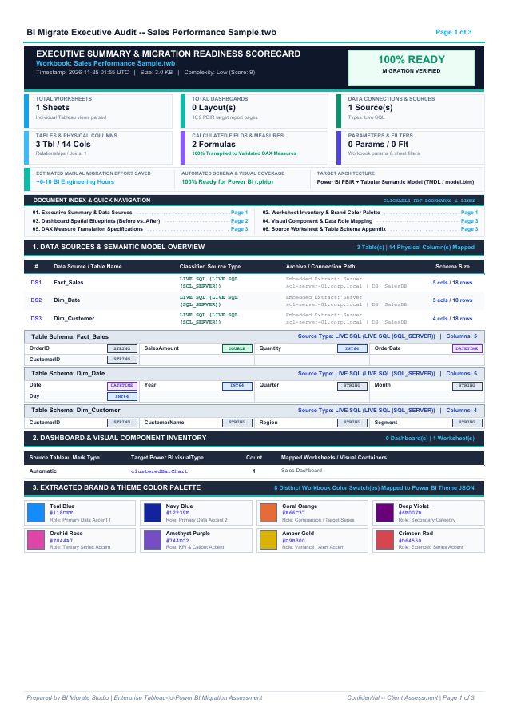

Editable Power BI project
Open the report and semantic model in Power BI Desktop. Review migrated visuals, table definitions, relationships, and DAX measures.
Tableau to Power BI migration software
Convert Tableau workbooks in batches with BI Migrate Studio. Your team receives editable Power BI reports and semantic models, executive audits, and a single ZIP for each batch.
What you receive
Studio packages the converted reports, model definitions, and audit findings so your developers and stakeholders can review the same batch.
Open the report and semantic model in Power BI Desktop. Review migrated visuals, table definitions, relationships, and DAX measures.
See the workbook inventory, dashboard layouts, and calculations. Use the audit to identify gaps and prioritize manual review.
Get each workbook’s project and audit in its own folder, with a batch summary CSV you can use to track the handoff.
Each Studio export includes the model behind the report, so your team can review the tables, relationships, Power Query queries, and translated DAX measures.
model.bim.pbip.definition/*.tmdlmodel.tmdl and separate files for tables, relationships, and queries, making it easier to review changes in Git.Public sample conversion
This sample was generated by Studio from a demo Tableau workbook included in the project. Open the audit or download the Master ZIP to inspect the report, semantic model, and batch summary.

Migration workflow
Organize your Tableau estate into batches and use the conversion audits to guide validation in Power BI.
Use a private invitation link to submit .twb and .twbx files for conversion.
Studio generates editable Power BI projects and documents the migrated visuals, calculations, and items that need review.
Receive the Master ZIP through a private download link. Open the projects in Power BI Desktop and use the audit findings to prioritize validation.
Before you start
Studio accepts .twb and .twbx workbooks. Workbooks with live connections or external extracts may require access to those sources to validate results in Power BI.
Review dashboard layouts, key measures, filters, and data refresh against your Tableau workbooks. The executive audit helps your team identify items that need adjustment or a manual rebuild.
After review, we release a private download link for the Master ZIP. The link expires after 48 hours. The ZIP contains the project and audit files grouped by workbook.
Contact sales for a migration quote based on workbook volume, complexity, and validation requirements.
Enterprise migrations
Share your workbook count, target timeline, and validation requirements.